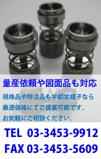
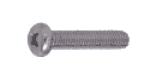
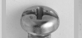
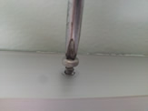
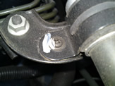
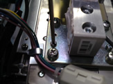
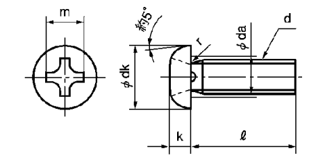

よく分かる規格ねじ
小ねじ類
ナット類
ボルト類
ワッシャー類
タッピング類

ナベ小ねじ
| 別名 | なべ小ねじ、ナベねじ |
| 英語名 | pan head (machine) screw |
| 中国語 | 圆头小螺丝 |
| JIS | JIS B 1101 |
|  | *ここでの別名・英語名・中国語名共に一般的な名称ですが、使われ方が違う場合もありますのでご注意下さい。 |
ナベ小ねじの特徴
 |
|
ナベ小ねじは現在一番多く使われている小ねじで、鍋をひっくり返したような頭部形状が特徴です。その知名度や使用頻度からもねじの代名詞といっても過言ではありません（写真左は＋右が±）。 |
|
 |
皿小ねじに比べてドライバーにしっかりかみあうので強く締め付けることができます。 |
ナベ小ねじの用途
|  車のボンネットの中 |
ナベ小ねじは特に決まった用途はありませんが逆に言うと使用範囲が非常に多く、価格も一般的には一番安いと言えます(*数量や条件で変わるので絶対ではありません)。 もし小ねじを購入する場合に頭部形状が何でもよいのであればこのナベ小ねじがお勧めです。 |
小ねじという種類自体サイズ(呼び径)が8mmくらいまでしかないという事もあり、主に小さな部品の締結に使われています。最近ではナベ小ねじに限らず、小ねじ自体が機械や製品の外側に使われる事が以前に比べれば少なくなりましたが、直接は見えない部分ではまだまだナベ小ねじは多く使われています。 あなたの家を探せばまず間違いなくこのナベ小ねじを見つける事ができるでしょう。 |
 |
ナベ小ねじの代表的な規格の寸法（サイズ）

| ねじの呼び径(d) | M2 | M2.3 | M2.5 | M2.6 | M3 | M4 | M5 | M6 | M8 |
| 頭部径(Φdk) | 3.5 | 4.0 | 4.5 | 4.5 | 5.5 | 7.0 | 9.0 | 10.5 | 14.0 |
| 頭部高さ(k) | 1.3 | 1.5 | 1.7 | 1.7 | 2.0 | 2.6 | 3.3 | 3.9 | 5.2 |
| 呼び長さ(l) | 4-20 | 4-20 | 5-30 | 5-30 | 5-40 | 6-50 | 8-50 | 8-60 | 10-60 |
| 単位(mm) | |||||||||
通常一般品のねじを表現する時には「材質」「表面処理」「ねじの種類」「ねじの呼び径」×「呼び長さ」で表現する場合が多いと言えます（例；「鉄ニッケルナベ3×6」の場合、材質「鉄」,表面処理「ニッケルメッキ」「ナベ小ねじ」の呼び径「M3」,呼び長さ「6mm」,となります）。
■通販サイト
| 材質/表面処理 | 種類 |
| ステンレス/生地 | ナベ小ねじ M2〜M10 |
| ナベ小ねじ（半ネジ(ネジ部50 M3〜M8 | |
| 鉄/三価ホワイト | ナベ小ねじ M2〜M12 |
| ナベ小ねじ（半ネジ(ネジ部50 M2.6〜M8 | |
| ナベ小ねじ（半ネジ(ネジ部100 M6 | |
| 鉄/ニッケル | ナベ小ねじ M2〜M10 |
| ナベ小ねじ（半ネジ(ネジ部50 M3〜M8 |